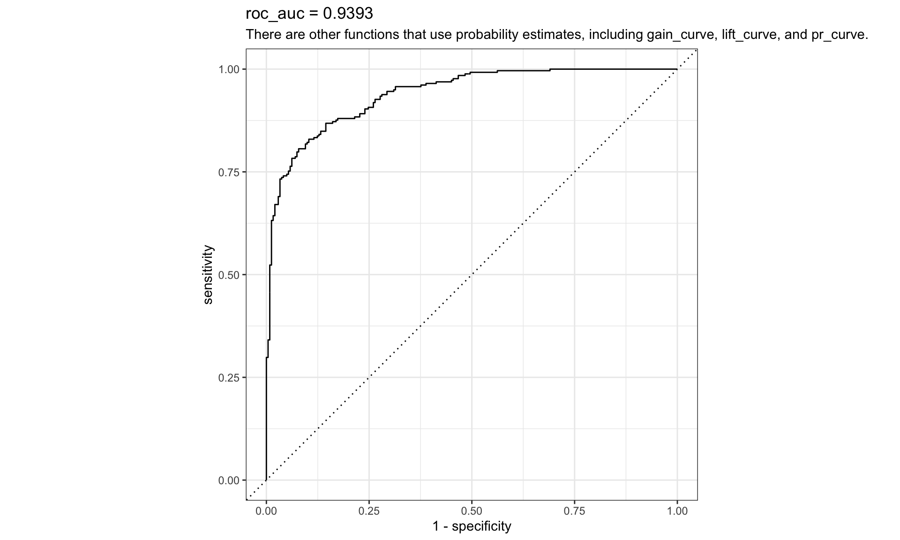

> # basic linear model
> parsnip::linear_reg() %>%
+ parsnip::set_mode("regression") %>%
+ parsnip::set_engine("lm")Linear Regression Model Specification (regression)
Computational engine: lm BSMM8740-2-R-2025F [WEEK - 4]
Last week we looked at several regression methods/models that are useful for predictions.
However, R packages that implement these methods have different conventions on how they accept data and specify the underlying model.
Today we look at the tidymodels package which will give us a workflow to describe, fit and compare models, using the same approach across methods.
parsnip package provides various modeling engines for different algorithms like lm(), glm(), randomForest(), xgboost(), etc.recipes package, allowing for seamless data transformation and feature engineering.rsample package supplies efficient methods for handling data splitting, cross-validation, bootstrapping, and more.yardstick package gives a wide range of evaluation metrics to assess model performance and choose the best model.tune package facilitates hyperparameter tuning for the tidymodels packages.workflows package can bundle together your pre-processing, modeling, and post-processing requests. The advantages are:
workflowsets package facilitates multiple workflows - applying different types of models and preprocessing methods on a given data set.In base R, the predict function returns results in a format that depends on the model.
By contrast, parsnip and workflows conforms to the following rules:
We’ve seen how the form of the arguments to linear models in R can be very different1.
Parsnip is one of the tidymodels packages that provides a standardized interface across models.
We look at how to fit and predict with parsnip in the next few slides, given data that has been preprocessed.
For example, we call stats::lm, specifying the model using a formula. By contrast, glmnet::glmnet specify the model with separate outcome and co-variate matrices
The tidymodels permits using both models with a uniform model specification.
lm or glmnet.With parsnip specifications are built without referencing the data:
The translate function can be used to see how the parsnip spec is converted to the correct syntax for the underlying package / functions.
> parsnip::linear_reg(penalty = 1) %>%
+ parsnip::set_engine("glmnet") %>%
+ parsnip::set_mode("regression") %>%
+ parsnip::translate()Linear Regression Model Specification (regression)
Main Arguments:
penalty = 1
Computational engine: glmnet
Model fit template:
glmnet::glmnet(x = missing_arg(), y = missing_arg(), weights = missing_arg(),
family = "gaussian")We can specify the model with either a formula or outcome and model matrix:
> # prep data
> data_split <- rsample::initial_split(modeldata::ames, strata = "Sale_Price")
> ames_train <- rsample::training(data_split)
> ames_test <- rsample::testing(data_split)
> # spec model
> lm_model <- parsnip::linear_reg() %>%
+ parsnip::set_mode("regression") %>%
+ parsnip::set_engine("lm")
> # fit model
> lm_form_fit <- lm_model %>%
+ # Recall that Sale_Price has been transformed using log()
+ parsnip::fit(Sale_Price ~ Longitude + Latitude, data = ames_train)
> # fit model with data in (x,y) form
> lm_xy_fit <-
+ lm_model %>% parsnip::fit_xy(
+ x = ames_train %>% dplyr::select(Longitude, Latitude),
+ y = ames_train %>% dplyr::pull(Sale_Price)
+ )Model results can be extracted from the fit object
Call:
stats::lm(formula = Sale_Price ~ Longitude + Latitude, data = data)
Coefficients:
(Intercept) Longitude Latitude
-127338384 -800948 1249366 (Intercept) Longitude Latitude
(Intercept) 4.771484e+13 364111131502 -323984674156
Longitude 3.641111e+11 3818253249 -156058898
Latitude -3.239847e+11 -156058898 7359938765A list of all parsnip-type models can be found here.
The workflow data structure collects all the steps of the analysis, including any pre-processing steps, the specification of the model, the model fit itself, as well as potential post-processing activities.
Similar collections of steps are sometimes called pipelines.
Workflows always require a parsnip model object
> # create test/train splits
> ames <- modeldata::ames %>% dplyr::mutate( Sale_Price = log10(Sale_Price) )
>
> set.seed(502)
> ames_split <-
+ rsample::initial_split(
+ ames, prop = 0.80, strata = "Sale_Price"
+ )
> ames_train <- rsample::training(ames_split)
> ames_test <- rsample::testing(ames_split)
>
> # Create a linear regression model
> lm_model <- parsnip::linear_reg() %>%
+ parsnip::set_engine("lm")
>
> # Create a workflow: adding a parsnip model
> lm_wflow <-
+ workflows::workflow() %>%
+ workflows::add_model(lm_model)If our model is very simple, a standard R formula can be used as a preprocessor:
> # preprocessing not specified; a formula is sufficient
> lm_wflow %<>%
+ workflows::add_formula(Sale_Price ~ Longitude + Latitude)
> # fit the model ( can be written as fit(lm_wflow, ames_train) )
> lm_fit <- lm_wflow %>% parsnip::fit(ames_train)
> # tidy up the fitted coefficients
> lm_fit %>%
+ # pull the parsnip object
+ workflows::extract_fit_parsnip() %>%
+ # tidy up the fit results
+ broom::tidy() %>%
+ # show the first n rows
+ dplyr::slice_head(n=3)# A tibble: 3 × 5
term estimate std.error statistic p.value
<chr> <dbl> <dbl> <dbl> <dbl>
1 (Intercept) -303. 14.4 -21.0 3.64e-90
2 Longitude -2.07 0.129 -16.1 1.40e-55
3 Latitude 2.71 0.180 15.0 9.29e-49When using predict(workflow, new_data), no model or preprocessor parameters like those from recipes are re-estimated using the values in new_data.
Take centering and scaling using step_normalize() as an example.
Using this step, the means and standard deviations from the appropriate columns are determined from the training set; new samples at prediction time are standardized using these values from training when predict() is invoked.
The fitted workflow can be used to predict outcomes given a new dataset of co-variates. Alternatively, the parsnip::augment function can be used to augment the new data with the prediction and other information about the prediction.
> lm_fit |>
+ parsnip::augment(new_data = ames_test %>% dplyr::slice(1:3)) |>
+ dplyr::select( c(starts_with("."), starts_with("MS")) )# A tibble: 3 × 4
.pred .resid MS_SubClass MS_Zoning
<dbl> <dbl> <fct> <fct>
1 5.22 -0.202 One_Story_1946_and_Newer_All_Styles Residential_High_Density
2 5.21 0.174 One_Story_1946_and_Newer_All_Styles Residential_Low_Density
3 5.28 -0.00629 Two_Story_1946_and_Newer Residential_Low_Density The model and data pre-processor can be removed or updated:
Predictors can be selected using tidyselect selectors, e.g. everything(), ends_with(“tude”), etc.
We’ve noted that R formulas can specify a good deal of preprocessing, including inline transformations and creating dummy variables, interactions and other column expansions. But some R packages extend the formula in ways that base R functions cannot parse or execute.
When add_formula is executed, since preprocessing is model dependent, workflows attempts to emulate what the underlying model would do whenever possible.
If a random forest model is fit using the ranger or randomForest packages, the workflow knows predictor columns that are factors should be left as is (not converted to dummy variables).
By contrast, a boosted tree created with the xgboost package requires the user to create dummy variables from factor predictors (since xgboost::xgb.train() will not). A workflow using xgboost will create the indicator columns for this engine. Also note that a different engine for boosted trees, C5.0, does not require dummy variables so none are made by the workflow.
Some packages have specilized formula specification, i.e. the lme4 package allows random effects per
The effect of this is that each subject will have an estimated intercept and slope parameter for age. Standard R methods can’t properly process this formula.
In this case The add_variables() specification provides the bare column names, and then the actual formula given to the model is set within add_model():
> multilevel_spec <- parsnip::linear_reg() %>% parsnip::set_engine("lmer")
>
> multilevel_workflow <-
+ workflows::workflow() %>%
+ # Pass the data along as-is:
+ workflows::add_variables(outcome = distance, predictors = c(Sex, age, Subject)) %>%
+ workflows::add_model(multilevel_spec,
+ # This formula is given to the model
+ formula = distance ~ Sex + (age | Subject))The workflowset package creates combinations of workflow components.
A list of preprocessors (e.g., formulas, dplyr selectors, or feature engineering recipe objects) can be combined (i.e. a crossproduct) with a list of model specifications, resulting in a set of workflows.
Create a set of preprocessors by formula
> # set up a list of formulas
> location <- list(
+ longitude = Sale_Price ~ Longitude,
+ latitude = Sale_Price ~ Latitude,
+ coords = Sale_Price ~ Longitude + Latitude,
+ neighborhood = Sale_Price ~ Neighborhood
+ )
>
> # create a workflowset
> location_models <-
+ workflowsets::workflow_set(
+ preproc = location, models = list(lm = lm_model)
+ )A workflow set is a nested data structure
# A workflow set/tibble: 4 × 4
wflow_id info option result
<chr> <list> <list> <list>
1 longitude_lm <tibble [1 × 4]> <opts[0]> <list [0]>
2 latitude_lm <tibble [1 × 4]> <opts[0]> <list [0]>
3 coords_lm <tibble [1 × 4]> <opts[0]> <list [0]>
4 neighborhood_lm <tibble [1 × 4]> <opts[0]> <list [0]>You can extract the elements of the workflowset using tidy::unnest, dplyr::filter, etc. Alternatively the are a number of workflowsets::extract_X functions that will do the job, e.g.
Create model fits
> # create a new column (fit) by mapping fit
> # against the data in the info column
> location_models %<>%
+ dplyr::mutate(
+ fit = purrr::map(
+ info
+ , ~ parsnip::fit(.x$workflow[[1]], ames_train)
+ )
+ )
>
> # view
> location_models$fit[[1]] |> broom::tidy()# A tibble: 2 × 5
term estimate std.error statistic p.value
<chr> <dbl> <dbl> <dbl> <dbl>
1 (Intercept) -184. 12.6 -14.6 1.97e-46
2 Longitude -2.02 0.135 -15.0 7.01e-49Once we’ve settled on a final model there is a convenience function called last_fit() that will fit the model to the entire training set and evaluate it with the testing set. Notice that last_fit() takes a data split as an input, not a dataframe.
# A tibble: 3 × 5
.pred id .row Sale_Price .config
<dbl> <chr> <int> <dbl> <chr>
1 5.22 train/test split 2 5.02 Preprocessor1_Model1
2 5.21 train/test split 4 5.39 Preprocessor1_Model1
3 5.28 train/test split 5 5.28 Preprocessor1_Model1Once we have a model, we need to know how well it works. A quantitative approach for estimating effectiveness allows us to understand the model, to compare different models, or to tweak the model to improve performance.
Our focus is on empirical validation; this usually means using data that were not used to create the model as the substrate to measure effectiveness.
When judging model effectiveness, the decision about which metrics to examine can be critical. Choosing the wrong metric can easily result in unintended consequences.
For example, two common metrics for regression models are the root mean squared error (RMSE) and the coefficient of determination (a.k.a. \(R^2\)). The former measures accuracy while the latter measures correlation. These are not necessarily the same thing.
> ames <- dplyr::mutate(modeldata::ames, Sale_Price = log10(Sale_Price))
>
> set.seed(502)
> ames_split <- rsample::initial_split(ames, prop = 0.80, strata = Sale_Price)
> ames_train <- rsample::training(ames_split)
> ames_test <- rsample::testing(ames_split)
>
> ames_rec <-
+ recipes::recipe(Sale_Price ~ Neighborhood + Gr_Liv_Area + Year_Built + Bldg_Type +
+ Latitude + Longitude, data = ames_train) %>%
+ recipes::step_log(Gr_Liv_Area, base = 10) %>%
+ recipes::step_other(Neighborhood, threshold = 0.01) %>%
+ recipes::step_dummy(
+ recipes::all_nominal_predictors()
+ ) %>%
+ recipes::step_interact( ~ Gr_Liv_Area:starts_with("Bldg_Type_") ) %>%
+ recipes::step_ns(Latitude, Longitude, deg_free = 20)
>
> lm_model <- parsnip::linear_reg() %>% parsnip::set_engine("lm")
>
> lm_wflow <-
+ workflows::workflow() %>%
+ workflows::add_model(lm_model) %>%
+ workflows::add_recipe(ames_rec)
>
> lm_fit <- parsnip::fit(lm_wflow, ames_train)# A tibble: 588 × 2
.pred Sale_Price
<dbl> <dbl>
1 5.22 5.02
2 5.21 5.39
3 5.28 5.28
4 5.27 5.28
5 5.28 5.28
6 5.28 5.26
7 5.26 5.73
8 5.26 5.60
9 5.26 5.32
10 5.24 4.98
# ℹ 578 more rows> # NOTE: yardstick::metric_set returns a function
> ames_metrics <-
+ yardstick::metric_set(
+ yardstick::rmse
+ , yardstick::rsq
+ , yardstick::mae
+ )
>
> ames_metrics(ames_test_res, truth = Sale_Price, estimate = .pred)# A tibble: 3 × 3
.metric .estimator .estimate
<chr> <chr> <dbl>
1 rmse standard 0.164
2 rsq standard 0.189
3 mae standard 0.124# A tibble: 3 × 3
.metric .estimator .estimate
<chr> <chr> <dbl>
1 accuracy binary 0.838
2 mcc binary 0.677
3 f_meas binary 0.849> two_class_curve <-
+ yardstick::roc_curve(
+ modeldata::two_class_example
+ , truth
+ , Class1
+ )
>
> parsnip::autoplot(two_class_curve) +
+ labs(
+ title = stringr::str_glue("roc_auc = {round(yardstick::roc_auc(modeldata::two_class_example, truth, Class1)[1,3],4)}")
+ , subtitle = "There are other functions that use probability estimates, including gain_curve, lift_curve, and pr_curve."
+ )
The primary approach for empirical model validation is to split the existing pool of data into two distinct sets, the training set and the test set.
The training set is used to develop and optimize the model and is usually the majority of the data.
The test set is the remainder of the data, held in reserve to determine the efficacy of the model. It is critical to look at the test set only once; otherwise, it becomes part of the modeling process.
The rsample package has tools for making data splits, as follows
> set.seed(501)
>
> # Save the split information for an 80/20 split of the data
> ames_split <- rsample::initial_split(ames, prop = 0.80)
> ames_split<Training/Testing/Total>
<2344/586/2930>The functions training and testing extract the corresponding data.
Simple random sampling is appropriate in many cases but there are exceptions. When there is a dramatic class imbalance in classification problems, one class occurs much less frequently than another. To avoid this, stratified sampling can be used. For regession problems the outcome data can be binned and then stratified sampling will keep the distributions of the outcome similar between the training and test set.
With time variables, random sampling is not the best choice. The rsample package contains a function called initial_time_split() that is very similar to initial_split() .
The prop argument denotes what proportion of the first part of the data should be used as the training set; the function assumes that the data have been pre-sorted by time in an appropriate order.
Validation sets are the answer to the question: “How can we tell what is best if we don’t measure performance until the test set?” The validation set is a means to get a rough sense of how well the model performed prior to the test set.
Validation sets are a special case of resampling methods.
> set.seed(52)
> # To put 60% into training, 20% in validation, and 20% in testing:
> ames_val_split <-
+ rsample::initial_validation_split(ames, prop = c(0.6, 0.2))
> ames_val_split<Training/Validation/Testing/Total>
<1758/586/586/2930>The functions validation extracts the corresponding data.
While the test set is used for obtaining an unbiased estimate of performance, we usually need to understand the performance of a model or even multiple models before using the test set.
Resampling is conducted only on the training set; the test set is not involved.
While there are a number of variations, the most common cross-validation method is V-fold cross-validation. The data are randomly partitioned into V sets of roughly equal size (called the folds).
In the example of 3-fold cross validation. In each of 3 iterations, one fold is held out for assessment statistics and the remaining folds are used for modeling.
The final resampling estimate of performance averages each of the V replicates.
In practice, values of V are most often 5 or 10.
> set.seed(1001)
> ames_folds <- rsample::vfold_cv(ames_train, v = 10)
> ames_folds |> dplyr::slice_head(n=5)# A tibble: 5 × 2
splits id
<list> <chr>
1 <split [2107/235]> Fold01
2 <split [2107/235]> Fold02
3 <split [2108/234]> Fold03
4 <split [2108/234]> Fold04
5 <split [2108/234]> Fold05The rsample::analysis() and rsample::assessment() functions return the corresponding data frames:
The most important variation on cross-validation is repeated V-fold cross-validation. Repeated V-fold cv, reduce noise in the estimate by using more data, i.e. averaging more V statistics.
R repetitions of V-fold cross-validation reduces the standard error variance by a factor of \(1/\sqrt{\text{R}}\).
# 10-fold cross-validation repeated 5 times
# A tibble: 50 × 3
splits id id2
<list> <chr> <chr>
1 <split [2107/235]> Repeat1 Fold01
2 <split [2107/235]> Repeat1 Fold02
3 <split [2108/234]> Repeat1 Fold03
4 <split [2108/234]> Repeat1 Fold04
5 <split [2108/234]> Repeat1 Fold05
6 <split [2108/234]> Repeat1 Fold06
7 <split [2108/234]> Repeat1 Fold07
8 <split [2108/234]> Repeat1 Fold08
9 <split [2108/234]> Repeat1 Fold09
10 <split [2108/234]> Repeat1 Fold10
# ℹ 40 more rowsOne variation of cross-validation is leave-one-out (LOO) cross-validation. If there are n training set samples, n models are fit using n−1 rows of the training set.
Each model predicts the single excluded data point. At the end of resampling, the n predictions are pooled to produce a single performance statistic. LOO cv is created using rsample::loo_cv().
Leave-one-out methods are deficient compared to almost any other method. For anything but pathologically small samples, LOO is computationally excessive.
Another variant of V-fold cross-validation is Monte Carlo cross-validation (MCCV).
The difference between MCCV and regular cross-validation is that, for MCCV, the input proportion of the data is randomly selected each time.
MCCV is performed using rsample::mv_cv().
Re-sampling: bootstrapping:
A bootstrap sample of the training set is a sample that is the same size as the training set but is drawn with replacement.
When bootstrapping, the assessment set is often called the out-of-bag sample.
# Bootstrap sampling
# A tibble: 5 × 2
splits id
<list> <chr>
1 <split [2342/882]> Bootstrap1
2 <split [2342/882]> Bootstrap2
3 <split [2342/858]> Bootstrap3
4 <split [2342/877]> Bootstrap4
5 <split [2342/837]> Bootstrap5Each data point has a 63.2% chance of inclusion in the training set at least once.
The assessment set contains all of the training set samples that were not selected for the analysis set (on average, with 36.8% of the training set), and so they can vary in size.
Bootstrap samples produce performance estimates that have very low variance (unlike cross-validation) but have significant pessimistic bias. This means that, if the true accuracy of a model is 90%, the bootstrap would tend to estimate the value to be less than 90%.
bootstrap: draw \(n\) samples with replacement from a dataset of size \(n\)
Re-sampling: resampling time:
When the data have a strong time component, a resampling method needs to support modeling to estimate seasonal and other temporal trends within the data.
For this type of resampling, the size of the initial analysis and assessment sets are specified and subsequent iterations are shifted in time
Rolling forecast orgin resampling:
Two different configurations of rolling forecast orgin resampling:
For a year’s worth of data, suppose that six sets of 30-day blocks define the analysis set. For assessment sets of 30 days with a 29-day skip, we can use the rsample package to specify:
Performance evaluation:
This sequence repeats for every resample.
Performance evaluation:
To reiterate, the process to use resampling is:
During resampling, the analysis set is used to preprocess the data, apply the preprocessing to itself, and use these processed data to fit the model.
The preprocessing statistics produced by the analysis set are applied to the assessment set. The predictions from the assessment set estimate performance on new data.
Performance evaluation:
The function tune::fit_resamples is like parsnip::fit with a resamples argument instead of a data argument:
Performance evaluation:
Optional arguments are:
metrics: A metric set of performance statistics to compute. By default, regression models use RMSE and R2 while classification models compute the area under the ROC curve and overall accuracy.
control: A list created by tune::control_resamples() with various options.
Performance evaluation:
Control arguments are:
verbose: A logical for printing logging.extract: A function for retaining objects from each model iteration (discussed later).save_pred: A logical for saving the assessment set predictions.Performance evaluation:
Save the predictions in order to visualize the model fit and residuals:
# Resampling results
# 10-fold cross-validation
# A tibble: 10 × 5
splits id .metrics .notes .predictions
<list> <chr> <list> <list> <list>
1 <split [2107/235]> Fold01 <tibble [2 × 4]> <tibble [0 × 3]> <tibble [235 × 4]>
2 <split [2107/235]> Fold02 <tibble [2 × 4]> <tibble [0 × 3]> <tibble [235 × 4]>
3 <split [2108/234]> Fold03 <tibble [2 × 4]> <tibble [0 × 3]> <tibble [234 × 4]>
4 <split [2108/234]> Fold04 <tibble [2 × 4]> <tibble [0 × 3]> <tibble [234 × 4]>
5 <split [2108/234]> Fold05 <tibble [2 × 4]> <tibble [0 × 3]> <tibble [234 × 4]>
6 <split [2108/234]> Fold06 <tibble [2 × 4]> <tibble [0 × 3]> <tibble [234 × 4]>
7 <split [2108/234]> Fold07 <tibble [2 × 4]> <tibble [0 × 3]> <tibble [234 × 4]>
8 <split [2108/234]> Fold08 <tibble [2 × 4]> <tibble [0 × 3]> <tibble [234 × 4]>
9 <split [2108/234]> Fold09 <tibble [2 × 4]> <tibble [0 × 3]> <tibble [234 × 4]>
10 <split [2108/234]> Fold10 <tibble [2 × 4]> <tibble [0 × 3]> <tibble [234 × 4]>Performance evaluation:
The return value is a tibble similar to the input resamples, along with some extra columns:
.metrics is a list column of tibbles containing the assessment set performance statistics..notes is list column of tibbles cataloging any warnings/errors generated during resampling..predictions is present when save_pred = TRUE. This list column contains tibbles with the out-of-sample predictions.Performance evaluation:
While the list columns may look daunting, they can be easily reconfigured using tidyr or with convenience functions that tidymodels provides. For example, to return the performance metrics in a more usable format:
What is collected are the resampling estimates averaged over the individual replicates. To get the metrics for each resample, use the option summarize = FALSE.
The models created during resampling are independent of one another and can be processed in parallel across processors on the same computer.
The code below determines the number of of possible worker processes.
For fit_resamples() and other functions in tune, parallel processing occurs when the user registers a parallel backend package.
These R backend packages define how to execute parallel processing.
In this section we have worked with the tidymodels package to build a workflow that facilitates building and evaluating multiple models.
Combined with the recipes package we now have a complete data modeling framework.